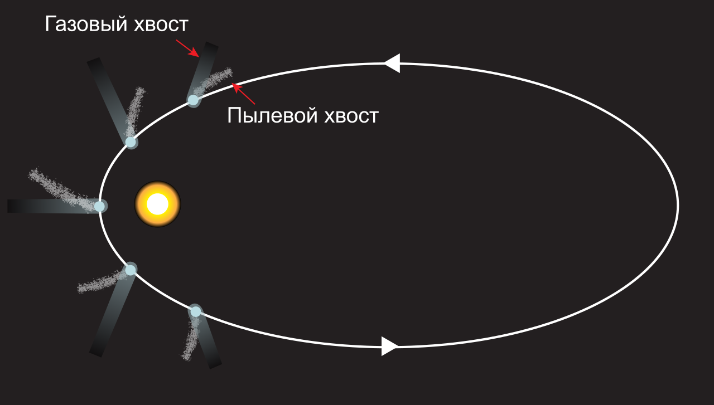
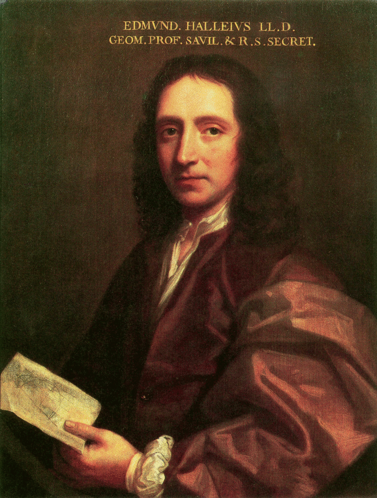
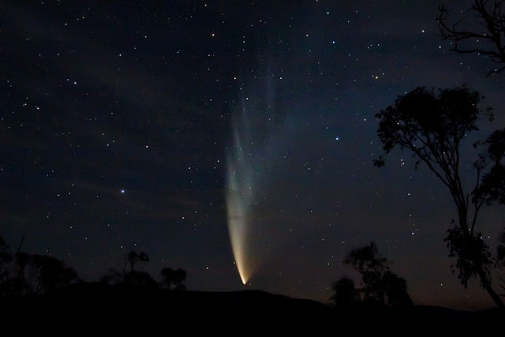
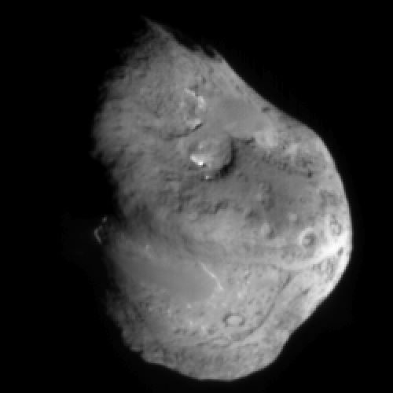
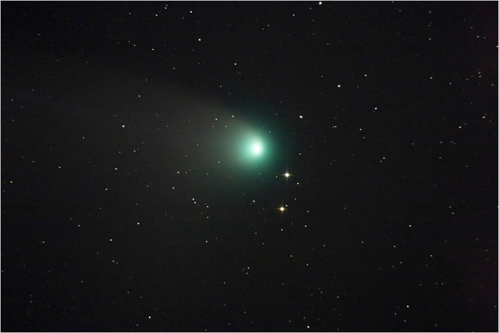
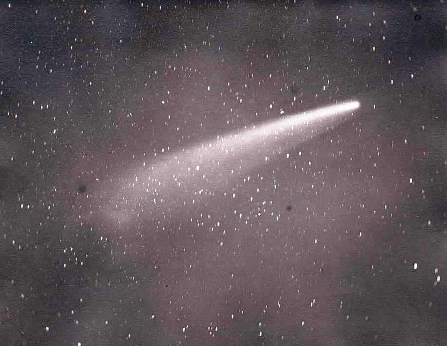
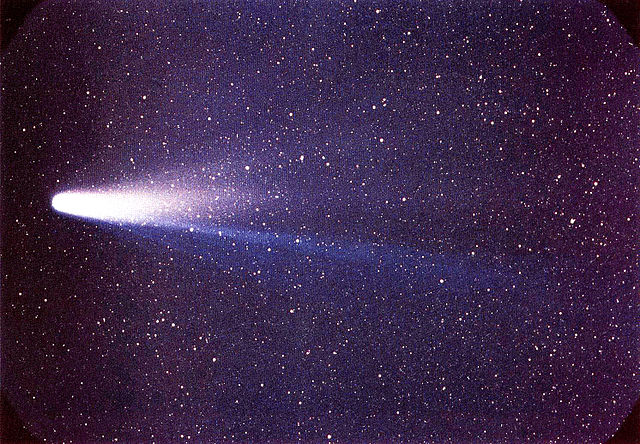

Комета (от др.-греч. κομήτης, komḗtēs — волосатый, косматый) — небольшое небесное тело, обращающееся вокруг Солнца по весьма вытянутой орбите в виде конического сечения. При приближении к Солнцу комета образует кому и иногда хвост из газа и пыли.
На середину 2018 года обнаружено 6339 комет, которые попадают во внутреннюю область Солнечной системы — область планет.
Предположительно, долгопериодические кометы прилетают во внутреннюю Солнечную систему из облака Оорта, в котором находится огромное количество кометных ядер. Тела, находящиеся на окраинах Солнечной системы, как правило, состоят из летучих веществ (водяных, метановых и других газов), испаряющихся при подлёте к Солнцу.
На данный момент обнаружено более 400 короткопериодических комет. Из них около 200 наблюдалось в более чем одном прохождении перигелия. Многие из них входят в так называемые семейства. Например, большинство самых короткопериодических комет (их полный оборот вокруг Солнца длится 3—10 лет) образуют семейство Юпитера. Немного малочисленнее семейства Сатурна, Урана и Нептуна (к последнему, в частности, относится знаменитая комета Галлея).
Кометы, прибывающие из глубин космоса, выглядят как туманные объекты, за которыми тянется хвост, иногда достигающий в длину нескольких миллионов километров. Ядро кометы представляет собой тело из твёрдых частиц, окутанное туманной оболочкой, которая называется комой. Ядро диаметром в несколько километров может иметь вокруг себя кому в 80 тыс. км в поперечнике. Потоки солнечных лучей выбивают частицы газа из комы и отбрасывают их назад, вытягивая в длинный дымчатый хвост, который движется за ней в пространстве.
Яркость комет очень сильно зависит от их расстояния до Солнца. Из всех комет только очень малая часть приближается к Солнцу и Земле настолько, чтобы их можно было увидеть невооружённым глазом. Самые заметные из них иногда называют «большими (великими) кометами».
Многие из наблюдаемых нами метеоров («падающих звёзд») имеют кометное происхождение. Это потерянные кометой частицы, которые сгорают при попадании в атмосферу планет.
Результаты исследования спектра межзвёздной кометы C/2019 Q4 (Борисова) показывают, что кометы в других планетных системах могут образовываться в результате процессов, аналогичных тем, которые привели к образованию комет в облаке Оорта в Солнечной системе.
Движение кометы
За минувшие столетия правила именования комет неоднократно меняли и уточняли. До начала XX века большинство комет называлось по году их обнаружения, иногда с дополнительными уточнениями относительно яркости или сезона года, если комет в этом году было несколько. Например, «Большая комета 1680 года», «Большая сентябрьская комета 1882 года», «Дневная комета 1910 года» («Большая январская комета 1910 года»).
После того как Галлей доказал, что кометы 1531, 1607 и 1682 годов — это одна и та же комета, и предсказал её возвращение в 1759 году, данная комета стала называться кометой Галлея. Вторая и третья известные периодические кометы получили имена Энке и Биэлы в честь учёных, вычисливших их орбиты, несмотря на то, что первая комета наблюдалась ещё Мешеном, а вторая — Мессье в XVIII веке. Позже периодические кометы обычно называли в честь их первооткрывателей. Кометы, наблюдавшиеся лишь в одном прохождении перигелия, продолжали называть по году появления.
В начале XX века, когда открытия комет стали частым событием, было выработано соглашение об именовании комет, которое остаётся актуальным до сих пор. Комета получает собственное имя только после того, как её обнаружат три независимых наблюдателя. В последние годы множество комет открывается с помощью инструментов, которые обслуживают большие команды учёных; в таких случаях кометы именуются по инструментам. Например, комета C/1983 H1 (IRAS — Араки — Алкока) была независимо открыта спутником IRAS и любителями астрономии Гэнъити Араки и Джорджем Алкоком. В прошлом, если одна группа астрономов открывала несколько комет, к именам добавляли номер (но только для периодических комет), например, кометы Шумейкеров — Леви 1—9. Сейчас рядом инструментов ежегодно открывается множество комет, что сделало такую систему непрактичной. Вместо этого используют специальную систему обозначения комет.
А вот и Эдмунд Галлей
До 1994 года кометам сначала давали временные обозначения, состоявшие из года их открытия и латинской строчной буквы, которая указывает порядок их открытия в данном году (например, комета Беннетта была девятой кометой, открытой в 1969 году, и при открытии получила временное обозначение 1969i). После того, как комета проходила перигелий, её орбита надёжно устанавливалась, и комета получала постоянное обозначение, состоявшее из года прохождения перигелия и римского числа, указывавшего на порядок прохождения перигелия в данном году. Так, комете 1969i было дано постоянное обозначение 1970 II (вторая комета, прошедшая перигелий в 1970 году). По мере увеличения числа открытых комет эта процедура стала очень неудобной. В 1994 году Международный астрономический союз одобрил новую систему обозначений комет. Сейчас в название кометы входит год открытия, буква, обозначающая половину месяца, в котором произошло открытие, и номер открытия в этой половине месяца. Эта система похожа на ту, которая используется для именования астероидов. Таким образом, четвёртая комета, открытая во второй половине февраля 2006 года, получает обозначение 2006 D4. Перед обозначением кометы ставят префикс, указывающий на природу кометы. Используются следующие префиксы:
-P/ — короткопериодическая комета (то есть комета, чей период меньше 200 лет, или которая наблюдалась в двух или более прохождениях перигелия);
-C/ — долгопериодическая комета;
-X/ — комета, достоверную орбиту для которой не удалось вычислить (обычно для исторических комет);
-D/ — кометы разрушились или были потеряны;
-A/ — объекты, которые были ошибочно приняты за кометы, но реально оказавшиеся астероидами.
Например, комета Хейла — Боппа, первая комета, открытая в первой половине августа 1995 года, получила обозначение C/1995 O1. Обычно после второго замеченного прохождения перигелия периодические кометы получают порядковый номер. Так, комета Галлея впервые была обнаружена в 1682 году. Её обозначение в том появлении по современной системе — 1P/1682 Q1.
Большая комета 2006 года
Ядро — твёрдая часть кометы, в которой сосредоточена почти вся её масса. Ядра комет на данный момент недоступны телескопическим наблюдениям, поскольку скрыты непрерывно образующейся светящейся материей.
По наиболее распространённой модели Уиппла ядро — смесь льдов с вкраплением частиц метеорного вещества (теория «грязного снежка»). При таком строении слои замороженных газов чередуются с пылевыми слоями. По мере нагревания газы, испаряясь, увлекают за собой облака пыли. Это позволяет объяснить образование газовых и пылевых хвостов у комет.
Однако согласно исследованиям, проведённым с помощью запущенной в 2005 году американской автоматической станции Deep Impact, ядро состоит из очень рыхлого материала и представляет собой ком пыли с порами, занимающими 80 % его объёма.
Ядро кометы Темпеля 1
Кома — окружающая ядро светлая туманная оболочка чашеобразной формы, состоящая из газов и пыли. Обычно тянется от 100 тысяч до 1,4 миллиона километров от ядра. Давление света может деформировать кому, вытянув её в антисолнечном направлении. Кома вместе с ядром составляет голову кометы. Чаще всего кома состоит из трёх основных частей:
-Внутренняя (молекулярная, химическая и фотохимическая) кома. Здесь происходят наиболее интенсивные физико-химические процессы.
-Видимая кома (кома радикалов).
-Ультрафиолетовая (атомная) кома.
Снимок кометы C/2001 Q4 (NEAT)
У ярких комет с приближением к Солнцу образуется «хвост» — слабая светящаяся полоса, которая в результате действия солнечного ветра чаще всего направлена в противоположную от Солнца сторону. Несмотря на то, что в хвосте и коме сосредоточено менее одной миллионной доли массы кометы, почти 99,9 % свечения, наблюдаемого при прохождении кометы по небу, происходит именно из этих газовых образований. Дело в том, что ядро очень компактно и имеет низкое альбедо (коэффициент отражения).
Хвосты комет различаются длиной и формой. У некоторых комет они тянутся через всё небо. Например, хвост кометы, появившейся в 1944 году[уточнить], был длиной 20 млн км. А Большая комета 1680 года (по современной системе — C/1680 V1) имела хвост, протянувшийся на 240 млн км. Также были зафиксированы случаи отделения хвоста от кометы (C/2007 N3 (Лулинь)).
Хвосты комет не имеют резких очертаний и практически прозрачны — сквозь них хорошо видны звёзды, — так как образованы из чрезвычайно разрежённого вещества (его плотность гораздо меньше, чем, к примеру, плотность газа, выпущенного из зажигалки). Состав его разнообразен: газ или мельчайшие пылинки, или же смесь того и другого. Состав большинства пылинок схож с астероидным материалом солнечной системы, что выяснилось в результате исследования кометы 81P/Вильда космическим аппаратом «Стардаст». По сути, это «видимое ничто»: человек может наблюдать хвосты комет только потому, что газ и пыль светятся. При этом свечение газа связано с его ионизацией ультрафиолетовыми лучами и потоками частиц, выбрасываемых с солнечной поверхности, а пыль просто рассеивает солнечный свет.
Теорию хвостов и форм комет разработал в конце XIX века русский астроном Фёдор Бредихин. Ему же принадлежит и классификация кометных хвостов, использующаяся в современной астрономии. Бредихин предложил относить хвосты комет к основным трём типам: прямые и узкие, направленные прямо от Солнца; широкие и немного искривлённые, уклоняющиеся от Солнца; короткие, сильно уклонённые от центрального светила.
Астрономы объясняют столь различные формы кометных хвостов следующим образом. Частицы, из которых состоят кометы, обладают неодинаковым составом и свойствами и по-разному отзываются на солнечное излучение. Таким образом, пути этих частиц в пространстве «расходятся», и хвосты космических путешественниц приобретают разные формы.
Скорость частицы, вылетевшей из ядра кометы складывается из скорости, приобретённой в результате действия Солнца — она направлена от Солнца к частице, и скорости движения кометы, вектор которой касателен к её орбите, поэтому частицы, вылетевшие к определённому моменту, в общем случае расположатся не на прямой линии, а на кривой, называемой синдинамой. Синдинама и будет представлять собой положение хвоста кометы в этот момент времени. При отдельных резких выбросах частицы образуют отрезки или линии на синдинаме под углом к ней, называемые синхронами. Насколько хвост кометы будет отличаться от направления от Солнца к комете, зависит от массы частиц и действия Солнца.
Большая комета 1882 года
Люди всегда проявляли особый интерес к кометам. Их необычный вид и неожиданность появления служили в течение многих веков источником всевозможных суеверий. Древние связывали появление в небе этих космических тел со светящимся хвостом с предстоящими бедами и наступлением тяжёлых времён.
В эпоху Возрождения в немалой степени благодаря Тихо Браге кометы получили статус небесных тел. В 1814 году Лагранж выдвинул гипотезу, что кометы произошли в результате извержений и взрывов на планетах, в XX веке эту гипотезу развивал С. К. Всехсвятский. Лаплас же считал, что кометы происходят из межзвёздного пространства.
Исчерпывающее представление о кометах астрономы получили благодаря успешным «визитам» в 1986 г. к комете Галлея космических аппаратов «Вега-1» и «Вега-2» и европейского «Джотто». Многочисленные приборы, установленные на этих аппаратах, передали на Землю изображения ядра кометы и разнообразные сведения о её оболочке. Оказалось, что ядро кометы Галлея состоит в основном из обычного льда (с небольшими включениями углекислых и метановых льдов), а также пылевых частиц. Именно они образуют оболочку кометы, а с приближением её к Солнцу часть из них — под давлением солнечных лучей и солнечного ветра — переходит в хвост.
Размеры ядра кометы Галлея, как правильно рассчитали учёные, равны нескольким километрам: 14 — в длину, 7,5 — в поперечном направлении.
Ядро кометы Галлея имеет неправильную форму и вращается вокруг оси, которая, как предполагал ещё немецкий астроном Фридрих Бессель (1784—1846), почти перпендикулярна плоскости орбиты кометы. Период вращения оказался равен 53 часам — что опять-таки хорошо согласовалось с вычислениями астрономов.
В 2005 г. космический аппарат НАСА «Дип Импакт» сбросил на комету Темпеля 1 зонд и передал изображения её поверхности.
Коммета Галлея
Если заинтересовались- посмотрите фильм от National Geographic: